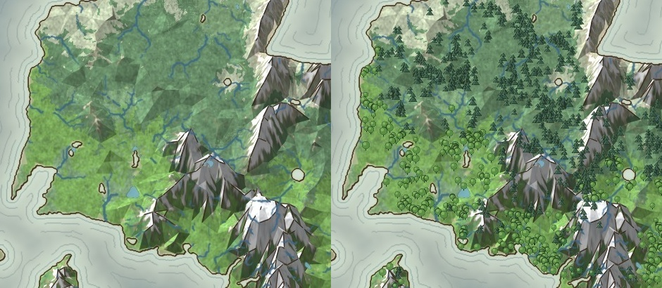
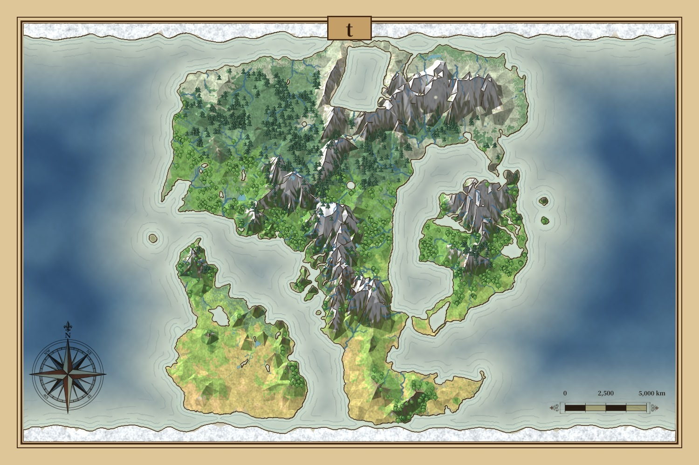
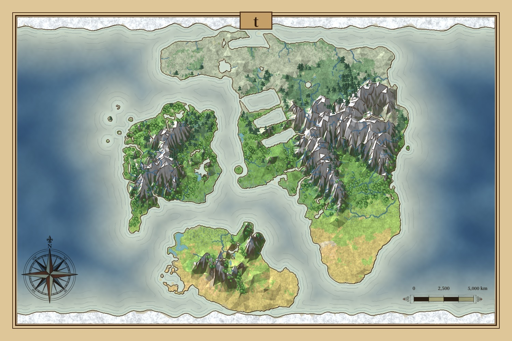
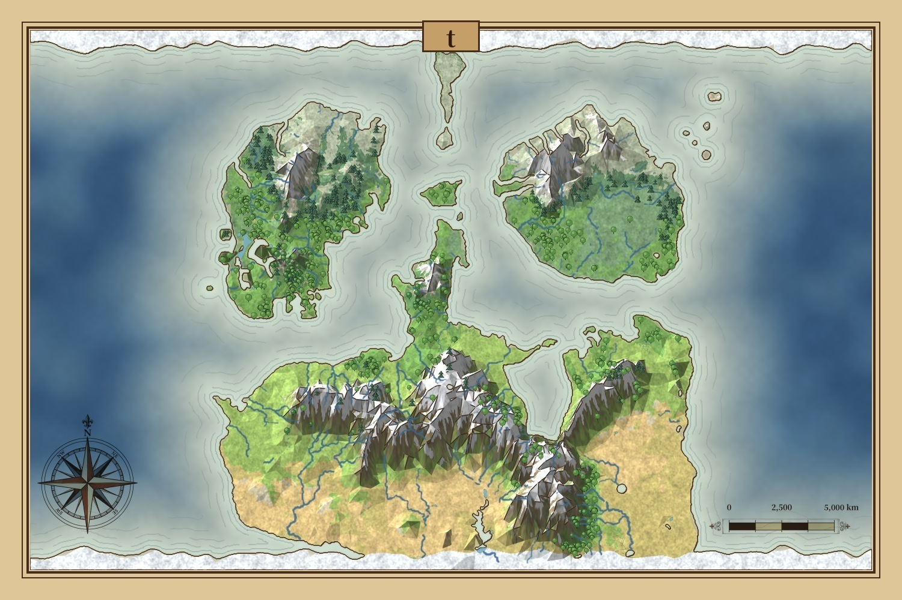
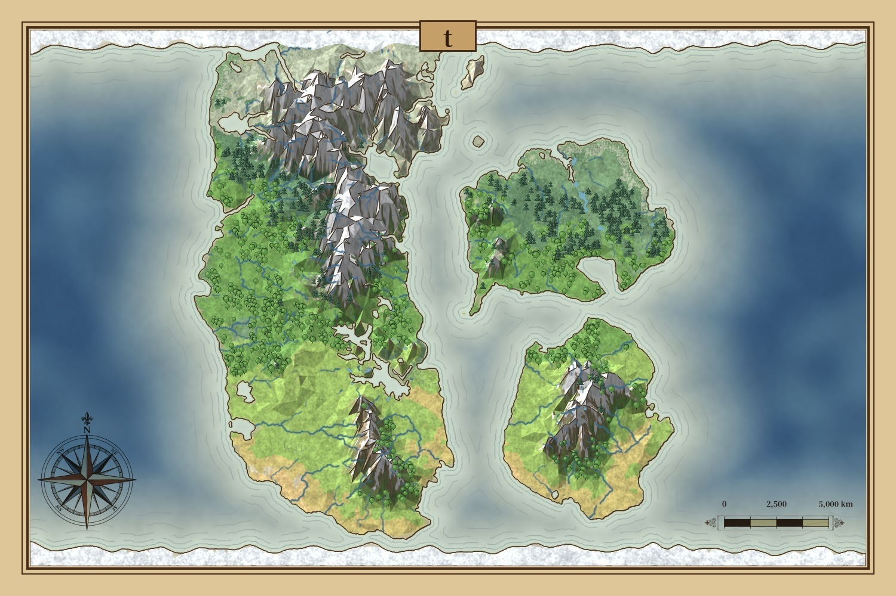
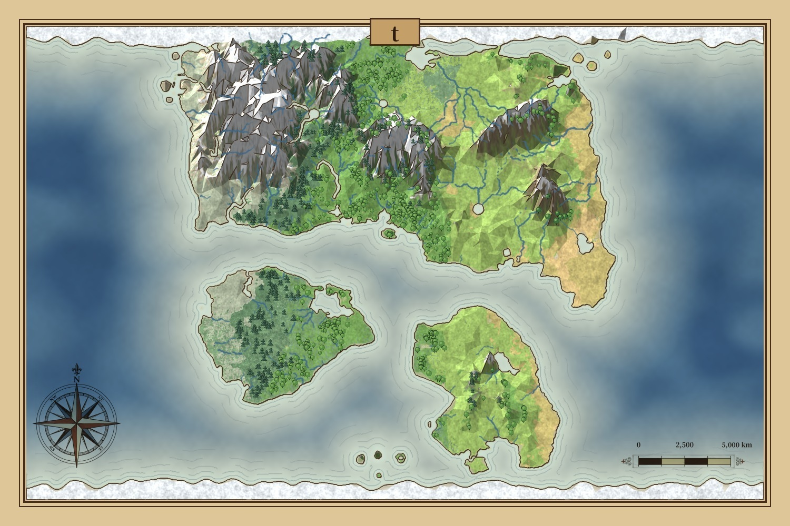

森(木の絵)(試作・11-20)
概要: 森の地域に、小さな木の絵を置きました。丸い葉の木(温帯・熱帯の森)と、とがった針葉樹(北の寒い森=タイガ)の2種類です。森の濃い所・薄い所のまとまりをつくり、山・川・湖・海岸・氷の上には置きません。川・方位記号・縮尺・海の深さも入れた最新の絵です。
拡大(左=木なし、右=木あり)

絵番号 E001
全体(5世界)

絵番号 E002

絵番号 E003

絵番号 E004

絵番号 E005

絵番号 E006
やったこと
- 世界データの「群系」(温帯の森・熱帯の森・タイガなど)から、森の場所を決めた。
- 森の中に、ゆらぎのある濃淡をつくり、木をまばらに置く(1本ずつ位置と大きさが少し違う)。
- 木は自分で描いた(濃い緑の丸い樹冠+左上のハイライト+細い墨の輪郭+幹。針葉樹は三角2段)。
目で見た評価(世界7と5)
- 北の針葉樹の濃い森と、南の丸い木の明るい森が分かれ、緑の面に地図らしい「森の質感」が出た。
- 木は小さく、全体図では点のように見える。拡大すれば木の形が分かる。
- 川や湖には木がかからず、山の斜面の下の方までは置いている。
限界・未確認
- 各世界1〜2枚・目視のみ。iPhoneでの見え方は未測定。3D表示には未反映。
- 木の数・大きさは、私が決めた初期値。本数は1世界で約1,500〜3,000。
- 木の絵は単純な形で、手描きの個性(種類の描き分け)は少ない。
次の一手: 木の大きさ・数・濃さを見て判断していただく。
ハブにもどる